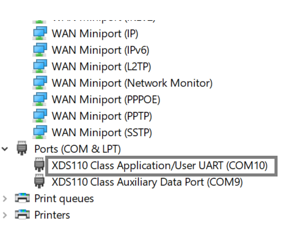

AM263x is an SOC from TI targeted to address various AUTOMOTIVE markets.
AUTOSAR is a key software which needs to run on ARM Cortex-R5 so that it can enable communication with other ECUs in the system.
TI needs to provide the MCAL drivers for the AUTOSAR to run on the SOCs.
Customers will need to procure the other AUTOSAR SW stack either internally or from third parties.
AM263x MCAL consists of three main components, Micro-controller abstraction layer (MCAL Driver code), Bare metal Example applications & EB Tresos studio Plugins.
drivers: The drivers folder includes driver code of MCAL modules. The MCAL drivers implement the Software specification as mentioned in the AUTOSAR 4.3.1 release. It also contains basic software stubs and hardware register information.
examples: The examples folder includes bare metal example applications for the MCAL driver modules that can be compiled and run on hardware.
plugins: The plugins folder includes plugins for the MCAL modules that can be loaded, compiled and generate configuration files with EB Tresos Studio software.
A set of MCAL included in the package each controlling a specific peripheral. MCAL drivers included are
Driver
Comments
MCU
Driver to control enabling of modules, PLL setting and basic microcontroller initialization
PORT
Driver for control of PinMux
SPI
SPI handler and driver for Serial Peripheral Interfaces: McSPI
CAN
Driver for the on-chip MCAN controller peripheral
GPT
Driver that controls the internal timer of the controller
WDG
Driver for controlling the watchdog when controller goes into continuous loop
DIO
Driver to read and write the data from the Channels / Port
FLS
Driver provides services for reading, writing, erasing flash memory for external flash device
ETH
Driver provides services to transmit and receive data with the external devices
ETHTRCV
Driver for Physical Layer Transceiver
ADC
Driver converts the analog value applied to ADC pin to its equivalent digital value
PWM
Driver provides the pulse width modulated signal
EPWM
Driver provides the enhanced pulse width modulated signal
ICU
The ICU driver is a module using the input capture unit (ICU) counting pulses, measuring of frequency and duty cycle
IPC
Make the initialization of mailbox driver and provides read and write APIs to perform inter processor communication
UART
Driver provides serial communication using UART
I2C
Driver provides support for transferring data between an external I2C device and the chip running this driver
DMA
Provides direct memory access
FsiRx
Provides fast serial data reception service with the external devices
FsiTx
Provides fast serial data transmission service with the external devices
LIN
Driver for the on-chip Lin controller peripheral
CMPSS
Driver consists of analog comparators and supporting circuits that are useful for power applications
The MCAL drivers implement the Software specification as mentioned in the AUTOSAR 4.3.1 release.
Additionally, examples to demonstrate MCAL driver usages have also been included.
1.Many examples use a standard UART terminal to log the output from the examples. You can use any UART terminal program for the same. Below steps show how to setup the UART terminal from CCS.
2.First identify the UART port as enumerated on the host machine.
Make sure that the EVM and UART cable connected as shown in Cable Connections
In windows, you can use the “Device Manager” to see the detected UART ports
Search “Device Manager” in Windows Search Box in the Windows taskbar.
If you don’t see any USB serial ports listed in “Device Manager” under “Ports (COM & LPT)”, then make sure you have installed the UART to USB driver from FTDI, https://www.ftdichip.com/FTDrivers.htm.

Fig. 3.2 Identify UART Port in Windows Device Manager
6.In this screenshot this happens to be COM5/COM11 however on your machine this could be different. One tip to make sure there is no mistake in identifying the UART port is to disconnect all other UART to USB devices other than this EVM before checking in device manager.
Invoke configuration parameters, internal make files of libraries and examples of different modules for building the source code.
Rules.make
Dependent details for the Makefile to execute like Path for compiler, library, configurations are provided in Rules.mak. Default values for build environment, compiler and SOC are defined here. The build environment/Compiler/SOC will be chosen as Windows/CLANG/am263 if the user has not specified any. Rules.mak shall be included in the Makefile at Root level.
mcal_component.mk
Contains the mcal_libs and mcal_examples list which is build as part of building libs and examples respectively. The user can add or delete MCAL components that need to be built.
Makefile at MCAL driver level
All the source and header files of respective modules are included in the Module makefile to support build.
This section describes how to build the MCAL package. The package is built using “gmake” from Cygwin.
Make sure that the Cygwin tools location is added to the PATH variable.
Also, make file internally uses some binaries like rm, mkdir, echo etc. from Cygwin.
Standard CCS installation comes with Cygwin, gmake and other utils as required to build MCAL modules.
Edit the Rules. Make file present in <MCAL_INSTALL_PATH>/build/Rules.make to give the appropriate paths for the tool chains and the current working directory. Make sure that CCS_PATH, and the TOOLCHAIN_PATH_R5 are updated with the proper path.
Edit paths for the below variables according to your system environment
1.In case of windows machine edit CCS path according to CCS version,
3.By default the above are for CLANG compiler, modify respective paths accordingly for using other compilers.
4.Install dependencies required for MCELF image format
Install Python3
Install Pip
Make sure pyelftools and construct is installed from pip. This package is required for encrypting MCELF application images.
pip install pyelftools construct
Install openssl v3 from here https://slproweb.com/products/Win32OpenSSL.html
By default, MCAL package provides pre-generated config headers under
<MCAL_INSTALL_PATH>/examples_config/<Module>_Demo_Cfg/soc/<SOC>/<Core>/include.
<SOC> should be with the following value(s): am263 in folder structure.
Go to <MCAL_INSTALL_PATH>/build directory and type below commands:
Description
Commands
Command to build all the libraries
gmake -s all PLATFORM=am263
Command to build an application given in examples folder
gmake -s <app_name> PLATFORM=am263
app_name can be found in the make file of the respective examples folder.
By default, MCELF is OFF. User can enable it with the macro MCELF_ENABLE (yes/no) as yes.
Give the following command to enable MCELF:
gmake -s dio_app MCELF_ENABLE=yes
Multicore ELF, or MCELF is a new application image format different from the existing RPRC format. Unlike a proprietary format like RPRC, multicore elf is based on the widely recognized ELF (Executable and Linkable format) standard. This ensures seamless compatibility with industry-standard tools and platforms.
For more information on ELF format please refer: https://man7.org/linux/man-pages/man5/elf.5.html
For more information on MCELF image format please refer: AM263x MCU SDK: Understanding Multicore ELF image format
The AM263x Sitara Arm® Microcontrollers are built to meet the complex real-time processing and control needs
of next generation industrial and automotive embedded projects. AM263x uniquely combines advanced compute
with industry leading real-time control peripherals to meet the growing performance needs of applications such
as HEV/EV (traction inverters, on-board chargers, and DC-DC converters), motor drives, renewable energy,
energy storage, and other general real-time constrained systems. AM263x combines up to four Cortex-R5F
MCUs, a real-time control subsystem (CONTROLSS), a Hardware Security Module (HSM), and one instance of
Sitara’s Programmable Real-Time Unit Subsystem (PRU-ICSS), making AM263x designed for advanced motor
control and digital power control applications.
The ARM Dual-Core Cortex-R5F processor subsystem (R5FSS) supports the following main features:
Armv7-R architecture
Support Dual Core mode, Single Core mode and Lockstep mode
Full-precision Floating Point (VFPv3)
8/16-region Memory Protection Unit (MPU)
8 breakpoints, 8 watch points
CoreSight Debug Access Port (DAP)
CoreSight ETM-R5 interface (CTI, ETM, ATB)
Performance Monitoring Unit (PMU)
Integrated Vectored Interrupt Manager (VIM) per core with 256 Interrupt Inputs each
Connect the CC or EVM board to your computer through JTag (USB Port)
Before running the binary file on target H/W follow the steps mentioned below:
Launch CCS, Go to View > Target Configuration
Create a new target configuration
Give a nice name to the new target configuration, typically {SOC name} _ {JTAG type}
Select connection as XDS110 USB Debug Probe
In “Board or Device” type “@VAR_SOC_NAME” and select “AM263x”
Click “Save” to save the newly created target configuration.
Under Advanced tab – Select Cortex_R5_0
Make sure the device gel file path is in the Initialization script field (C:ti/ccs1250/ccs/ccs_base/emulation/gel/AM263x/AM263x.gel)
Click “Save” to save the newly created target configuration
Launch the target configuration for AM263x
Connect to Cortex_R5_0 core
Connect UART USB cable to the serial UART terminal (with appropriate port) and select UART1 serial port for viewing the UART logs and providing user input. By default, configuration may be matched by selecting baud rate as 115200, 8-bit Data Size, Parity None and 1 Stop Bit as the serial port settings.
Load binary files using Load Program option
Run the application and follow the prompts and output on CCS console/UART serial console.